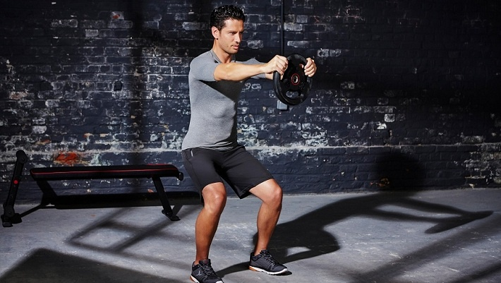

Welcome to Tipos de ejercicios de piernas
Ejercicios para entrenar las piernas en casa y en el gimnasio
2021.06.22 15:36Webedia Vitónica Menú Nuevo ENTRENAMIENTO Y FITNESS NUTRICIÓN Y DIETAS SALUD RUNNING EQUIPAMIENTO Instagram Facebook Youtube Flipboard Entrenamiento
Los nueve mejores ejercicios para entrenar tus piernas que puedes hacer en el gimnasio (o en casa)
HOY SE HABLA DE Smartwatch Frutas Aceite Gimnasio Fruta Bicicleta eléctrica Bicicleta Auriculares TomateSuscríbete a Vitónica
Síguenos Twitter Facebook Youtube Instagram Flipboard Sin comentarios 03 marzo 2021, 15:38 Miguel Fitness @MiguelFitStyleLas piernas son nuestro "medio de transporte" y el pilar principal sobre el que nos mantenemos de pie, y por ello es importante contar con un buen tono muscular . Seguro que en algún momento todos hemos oído decir a alguien de nuestro círculo familiar "es que me duelen mucho las piernas", y muy posiblemente en más de un caso las molestias puedan tener su origen en la falta de tono muscular.
Además, un buen tono muscular en nuestras piernas , especialmente en la musculatura isquiosural, puede prevenir molestias y lesiones en otro punto clave, nuestra espalda (en muchos casos de molestias lumbares, éstas se encuentran relacionadas con un acortamiento o atrofia muscular de los isquiosurales). Hoy os presentamos los nueve mejores ejercicios para tren inferior que podéis realizar en el gimnasio (e incluso muchos de ellos en vuestra casa sin apenas material).
En Vitónica Piernas y glúteos fuertes en 2020: una rutina de la que disfrutarás en el gimnasioSentadillas
Las sentadillas son, sin duda, el ejercicio estrella cuando hablamos de trabajar el tren inferior y uno de los llamados "ejercicios básicos o multiarticulares". Por el volumen de trabajo que puede suponer, su mecánica y sus beneficios en cuanto al aumento de la fuerza y potencia de la musculatura de nuestros cuádriceps, las sentadillas son un ejercicio indispensable en nuestra rutina salvo que tengamos alguna lesión o limitación que nos impida realizarlas. Además, otro de los beneficios de las sentadillas es la implicación del core para estabilizar toda la musculatura abdominal y de la espalda.
Dentro de la categoría de sentadillas existen diferentes variantes que nos permitirán trabajar nuestro tren inferior (y principalmente nuestros cuádriceps). Así, algunas variantes que podemos incluir al realizar trabajo de piernas son:
Sentadilla con barra Sentadilla frontal con barra : a diferencia de la versión clásica en la que la barra recae a nuestra espalda sobre los hombros, en esta variante colocaremos la barra sobre nuestros hombros pero por delante de nuestra cabeza. Sentadilla sumo: en esta variante de la clásica sentadilla , la principal modificación va a ser la colocación de nuestros pies y nuestras rodillas : como podemos ver en la imagen, las piernas se sitúan ligeramente más abiertas que la anchura de nuestro hombros y las rodillas, a la hora de flexionarlas, "miran" hacia el exterior. Los brazos, podemos utilizarlos para equilibrarnos o mantener la postura y la alineación de nuestra espalda (como en la imagen) o, si queremos añadir intensidad, utilizarlos para sostener una mancuerna o kettlebell como peso añadido. Además de trabajar los cuádriceps, esta variante de sentadilla nos va a permitir realizar también un muy buen trabajo de glúteos , siempre que realicemos de forma correcta la técnica del ejercicio .Zancadas
Las zancadas son otro de los ejercicios clásicos para trabajar la musculatura de nuestros cuádriceps. Su principal ventaja, al igual que la de las sentadillas, es que podemos realizarlas sin necesidad de ningún peso extra , por lo que son ideales para realizar además de en el gimnasio en el salón de nuestra casa si no queremos ir al gimnasio.
FUSIYU Mancuernas de 10/15/20KG,Juego de Mancuernas,Juego de Mancuernas Ajustables,Juego de Entrenamiento de Ajustable para Hombres y Mujeres,Mancuernas Pesadas para El Hogar
Hoy en Amazon por 52,99€Las variantes principales que presenta este ejercicio son las zancadas con barra tras nuca, las zancadas con mancuerna y las zancadas con kettlebell . Además, podemos realizar el ejercicio portando la pesa o mancuerna en una de las manos, lo que aumentará el componente de inestabilidad y nos obligará a realizar un mayor trabajo estabilizador del core . Y si queremos añadir aún más inestabilidad e intensidad al trabajo, podemos probar a realizar el ejercicio con la ayuda de un TRX y sosteniendo una mancuerna.
Peso muerto
Unos lo incluyen entre los ejercicios para la espalda y otros en los ejercicios para la musculatura femoral , pero aquí queremos abordarlo desde el punto de vista del trabajo de la musculatura femoral ya que el peso muerto es uno de los mejores ejercicios para desarrollar la parte posterior de nuestro tren inferior . Debido a que es un ejercicio que va a implicar el trabajo de nuestra espalda a nivel lumbar, debemos prestar especial atención a la técnica empleada , ya que ello va a reducir el riesgo de lesiones (y no querer cargar más peso del que podamos manejar).
Como los anteriores ejercicios, el peso muerto puede presentar algunas variantes para que no resulte aburrido trabajar siempre la misma versión del ejercicio. Así, podemos encontrarnos:
Peso muerto con mancuerna/kettlebell a una pierna : aumenta la inestabilidad y por ende el trabajo de nuestro core para mantener la postura. Peso muerto estilo sumo : en el que asimos la barra como si realizáramos una sentadilla con barra estilo sumo, es decir, con las piernas más abiertas de lo normal y los brazos a la anchura de los hombros o un poco más cerrados. Peso muerto con barra hexagonal : al contar con la barra hexagonal , el peso que carguemos se distribuirá de forma más regular, lo que en parte aliviará un poco la carga y la tensión generada. Peso muerto con mancuernas : se realiza del mismo modo y con la misma técnica que el peso muerto clásico con barra, sólo que en esta ocasión trabajaremos con mancuernas .C.P. Sports barras de pesas olímpica 50mm, hasta 250 kg, longitud total 220 cm, discos mancuerna, engomado discos con agujeros de agarre 50 mm, peso total 100 kg, 2 x cierres de muelle 50 mm, G42
Hoy en Amazon por 500,00€En caso de que quisiéramos aumentar la intensidad de cualquiera de estas variantes, podemos incorporar el trabajo con bandas elásticas para añadir más tensión al ejercicio.
En Vitónica Guía completa para mejorar en peso muerto: cómo entrenar para conseguir un mejor levantamientoExtensiones de cuádriceps
Las extensiones de cuádriceps son un ejercicio que puede tener principalmente dos finalidades: por un lado, la ganancia de fuerza previa para una persona que nunca haya hecho deporte y se esté iniciando de cara a poder trabajar más adelante con las sentadillas con barra y, por otro lado, son un ejercicio que suele utilizarse mucho como método rehabilitador en determinadas lesiones para no someter a las rodillas a la carga que suponen las sentadillas.
Al ser un ejercicio en máquina, el movimiento a realizar es totalmente guiado, por lo que eliminamos el componente de inestabilidad que supone el trabajo con pesos libres y protegemos un poco más nuestras articulaciones. Además, el peso a seleccionar es más ajustable que en las sentadillas.
Curl femoral
Al igual que las extensiones de piernas eran un ejercicio que protegía nuestras rodillas y nos ayudaba en caso de estar recuperándonos de una lesión, el curl femoral cumple más o menos la misma función pero para la musculatura femoral. En primer lugar, es un gran ejercicio si carecemos de fuerza en la musculatura isquiosural y nos sirve de paso previo al peso muerto, por lo que en personas desenfrenadas debería ser la primera opción antes que el trabajo con pesos libres.
Además, es otro ejercicio a realizar en máquina (nuevamente un movimiento guiado), por lo que eliminamos el componente de inestabilidad. Por el contrario, es un ejercicio en el que si seleccionamos demasiado peso o no tenemos una técnica adecuada y no sabemos colocarnos sobre la máquina, podemos llegar a sobrecargar la zona lumbar , aumentando el riesgo de lesión a nivel lumbar e isquiosural.
Del mismo modo que las sentadillas tenían variantes para ejecutarlas con barra, mancuerna o kettlebell, para trabajar los isquiosurales tenemos una variante del curl femoral llamada Nordic curl : es un ejercicio que, si bien apenas suele verse en la mayoría de los gimnasios, tiene un gran trabajo de fuerza para nuestros isquiosurales, aunque a diferencia del resto de ejercicios, en éste sólo vamos a realizar la fase excéntrica , es decir, la bajada.
Para poder realizar este ejercicio, debemos asegurarnos de tener los tobillos bien sujetos , ya sea con un compañero que nos ayude, una espaldera, un banco o una barra con discos que nos estabilice, ya que de lo contrario será prácticamente imposible que podamos realizarlo. Además, deberemos cuidar la postura de nuestra espalda durante el movimiento, de tal forma que evitemos un arqueamiento excesivo o una compensación muscular de la misma.
Por último, realizaremos el movimiento controlando la bajada o caída con la musculatura isquiosural, bajando hasta donde podamos en caso de no poder bajar hasta abajo del todo y, si podemos, llegando a tocar el suelo. Para subir a la posición inicial tenemos dos opciones: levantarnos de forma normal con los brazos o bien realizando una medio flexión explosiva (con lo que añadiríamos un trabajo de pectoral y brazos y realizaríamos un ejercicio más completo).
Puente de glúteos
Este ejercicio es muy habitual de ver en los gimnasios entre el público femenino principalmente, aunque ya cada vez más chicos lo van incorporando a su rutina. Aunque implica la musculatura de la región glútea , con él vamos a poder trabajar también la musculatura isquiosural.
Para realizarlo, nos tumbaremos boca arriba con la piernas flexionadas y las plantas de los pies apoyadas en el suelo y, a continuación, realizaremos una elevación de cadera tanto como sea posible, realizando una contracción de los glúteos en el punto de mayor altura. Además, si queremos añadir intensidad y variedad podemos hacerlo de dos formas diferentes:
Con una mini banda elástica entre nuestras rodillas de forma que tengamos que mantener una tensión suficiente para que no se nos caiga la banda. O bien colocando los pies sobre una superficie ligeramente elevada . A mayor elevación, mayor será el trabajo y la fuerza que tengamos que hacer con la musculatura isquiosural. En Vitónica Entrena tus glúteos con Glute Bridge y Hip ThrustElevaciones de gemelos
Es el clásico ejercicio que consiste en "ponerse de puntillas" . Clásicamente se realizaba colocándonos sobre un bordillo apoyados en la puntera de nuestros pies y elevándonos como si nos pusiéramos de puntillas , pero desde hace algunos años ya prácticamente todos los gimnasios cuentan con máquinas para reproducir este movimiento con la particularidad de poder regular la carga con la que trabajar.
Ejercicios pliométricos
Dentro del grupo de los ejercicios pliométricos , debemos señalar que uno de sus principales beneficios es la mejora de la explosividad de la musculatura de nuestro tren inferior además de ser un excelente trabajo para mejorar nuestra coordinación y nuestra resistencia cardiovascular. Como podemos ver en el vídeo, uno de los elementos más utilizados para realizar este tipo de ejercicios es el cajón o " jump box " , aunque nosotros podemos utilizar un banco o step o, si entrenamos en casa, una silla, taburete o banqueta.
Ejercicios con escalera de agilidad
Si bien el uso de una escalera de agilidad no responde a un trabajo puramente de fuerza, los beneficios que podemos darle a nuestro tren inferior si añadimos este elemento a nuestra rutina de piernas son más que interesantes:
En primer lugar, el uso de una escalera de agilidad nos va a permitir ganar precisamente eso, agilidad en nuestro tren inferior y coordinación (básica para un trabajo eficiente de nuestras piernas y no tropezarnos ni caernos). Nos va a permitir ganar resistencia en nuestras piernas debido a la alta intensidad con la que podemos llegar a trabajar utilizando este elemento y tan sólo con nuestro propio peso. El uso de las escaleras de agilidad implica casi una infinita variedad de ejercicios que podemos idear, lo que nos asegura un entrenamiento dinámico y para nada aburrido. Y si vais a trabajar en casa , este elemento apenas ocupa espacio y podéis realizar una amplia variedad de circuitos y ejercicios sin moveros del salón de casa (y tienen un precio bastante asequible).Este artículo fue originalmente publicado por Miguel Fitness en enero de 2018 y ha sido revisado para su republicación.
Imágenes | iStock
Vídeos | Bret Contreras , Sergio Carrasco Villar
Vitónica en Instagram
Seguir
Compartir Los nueve mejores ejercicios para entrenar tus piernas que puedes hacer en el gimnasio (o en casa)
Facebook Twitter Flipboard E-mail Temas Entrenamiento Glúteos Cuádriceps Peso muerto Piernas Gemelos Entrenamiento en casa Sentadilla Isquiosurales Entrenamiento en el gimnasio Entrenamiento de piernasCompartir
Facebook Twitter Flipboard E-mail Comentarios cerrados Temas de interés quinoa crossfit fitbit pilates ejercicios yoga adelgazar andando ayuno intermitente tofu adelgazar sin dieta pastillas adelgazar mercadona dieta keto dieta disociada comida a domicilio Inicio Lesiones Dietas Recetas Saludables Musculación Entrenamiento Alimentos Yoga Abdominales Rutinas Suplementos HIIT CardioVer más temas
Síguenos Twitter Facebook Youtube Instagram Flipboard E-mail Vitónica TV Lo mejor Equipo editorial Contacta con nosotrosMás sitios que te gustarán
Xataka Trendencias Poprosa EspinofExplora en nuestros medios
Tecnología Móviles, tablets, aplicaciones, videojuegos, fotografía, domótica Xataka Xataka Móvil Xataka Foto Xataka Android Xataka Smart Home Xataka Windows Xataka Ciencia Applesfera Genbeta Magnet Mundo Xiaomi Videojuegos Consolas, juegos, PC, PS4, Switch, Nintendo 3DS y Xbox 3DJuegos Vida Extra IGN Millenium 3DJuegos PC Entretenimiento Series, cine, estrenos en cartelera, premios, rodajes, nuevas películas, televisión Sensacine Espinof Gastronomía Recetas, recetas de cocina fácil, pinchos, tapas, postres Directo al Paladar Estilo de vida Moda, belleza, estilo, salud, fitness, familia, gastronomía, decoración, famosos Vitónica Trendencias Trendencias Hombre Decoesfera Compradiccion Poprosa Latinoamérica Publicaciones de México Xataka México Directo al Paladar México Sensacine México 3DJuegos México Aviso legal Condiciones de uso Condiciones de uso de cookies Publicidad InicioReciente
Amazon Prime Day 2021: las mejores ofertas (actualizadas) en accesorios para montar tu propio gimnasio en casa Amazon Prime Day: grandes ofertas (actualizadas) en relojes deportivos Garmin, Polar, Fitbit y más Amazon Prime Day 2021: el rodillo de bicicleta magnético Elite Novo Force para practicar ciclismo en casa está rebajasdísimo hoy Amazon Prime Day 2021: las mejores ofertas (actualizadas) en productos de running Los posibles efectos indeseados de consumir demasiadas frutas y verduras La exposición a contaminantes del aire durante el embarazo podría tener efectos negativos en el bebé después del parto Nueve recetas de helados veganos y saludables, para disfrutar esta temporada Amazon Prime Day 2021: las mejores ofertas en accesorios para montar tu propio gimnasio en casa Amazon Prime Day: grandes ofertas en colchonetas y gomas elásticas para entrenar en casa Amazon Prime Day: grandes ofertas en relojes deportivos Garmin, Polar y Fitbit Amazon Prime Day 2021: las mejores ofertas en productos de running Dieta rica en fibra: 37 recetas sanas, sencillas y rápidas para saciarnos fácilmente y perder peso Por si te lo perdiste Diferentes tipos de entrenamiento de alta intensidad: diferencias entre ellos y cómo realizar cada uno Tu dieta semanal con Vitónica: menú saludable para proteger la flora intestinal Este verano disfruta del aire libre: Cinco deportes para practicar ejercicio aeróbico fuera de casa y del gimnasio Cómo hacer salmorejo sin pan: receta saludable ideal para el verano Por si te lo perdiste 23 recetas fáciles y saludables para sumar a tu barbacoa este verano Siete consejos para principiantes en el gimnasio Gorras y viseras con las que hacer deporte y proteger tu rostro del sol al mismo tiempo Nitratos: el suplemento de moda que nos puede ayudar a mejorar el rendimiento en resistenciaVer más artículos
Vitónica TV
El desayuno NO es la comida más importante del día Xiaomi Mi Smart Band 6: tan RECOMENDABLE e IMPERFECTA como siempre Xiaomi Mi Watch Lite, análisis: PERFECTO PARA SER TU PRIMER SMARTWATCHVer más vídeos
Síguenos Twitter Facebook Youtube Instagram FlipboardEn Vitónica hablamos de
Lesiones Dietas Recetas Saludables Musculación Entrenamiento Alimentos Yoga Abdominales Rutinas Suplementos HIIT CardioVer más temas
SubirWebedia
Tecnología
Xataka Xataka Móvil Xataka Foto Xataka Android Xataka Smart Home Xataka Windows Xataka Ciencia Applesfera Genbeta Magnet Mundo XiaomiVideojuegos
3DJuegos Vida Extra IGN Millenium 3DJuegos PCEntretenimiento
Sensacine EspinofGastronomía
Directo al PaladarEstilo de vida
Vitónica Trendencias Trendencias Hombre Decoesfera Compradiccion PoprosaLatinoamérica
Xataka México 3DJuegos México Sensacine México Directo al Paladar México Webedia Xataka Vida Extra Espinof Genbeta Directo al Paladar Xataka Ciencia Trendencias Applesfera Xataka Móvil Decoesfera Vitónica Xataka Foto Trendencias Hombre Xataka Android Xataka Smart Home Xataka Windows Magnet Compradiccion 3DJuegos Sensacine IGN Millenium Poprosa Mundo Xiaomi 3DJuegos PCTecnología
Xataka Xataka Móvil Xataka Foto Xataka Android Xataka Smart Home Xataka Windows Xataka Ciencia Applesfera Genbeta Magnet Mundo XiaomiVideojuegos
3DJuegos Vida Extra IGN Millenium 3DJuegos PCEntretenimiento
Sensacine EspinofGastronomía
Directo al PaladarEstilo de vida
Vitónica Trendencias Trendencias Hombre Decoesfera Compradiccion Poprosa